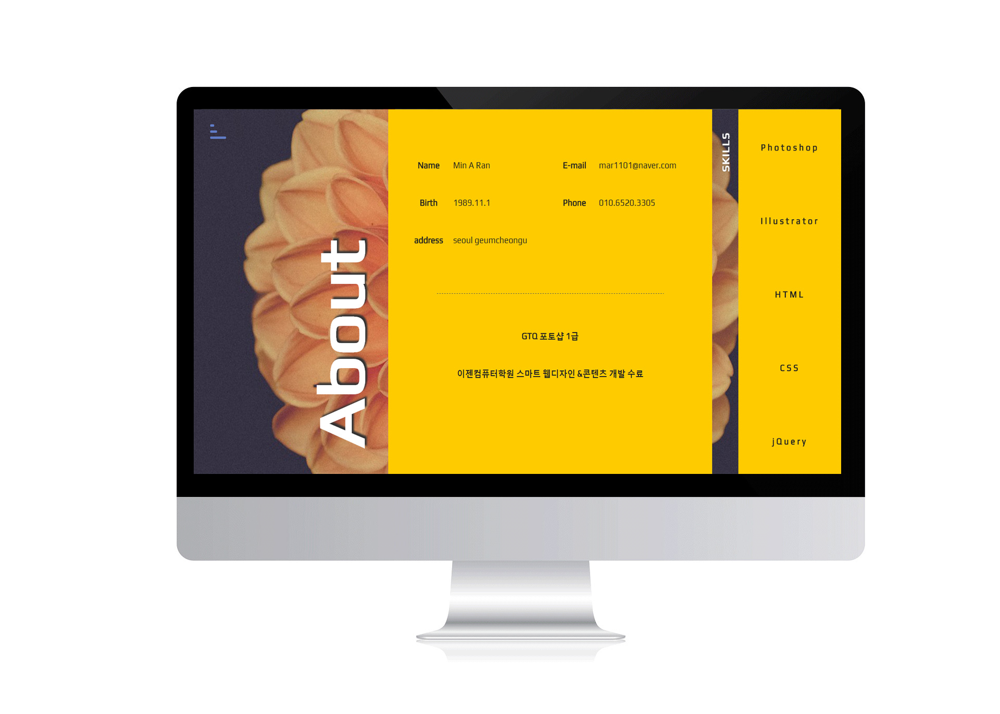
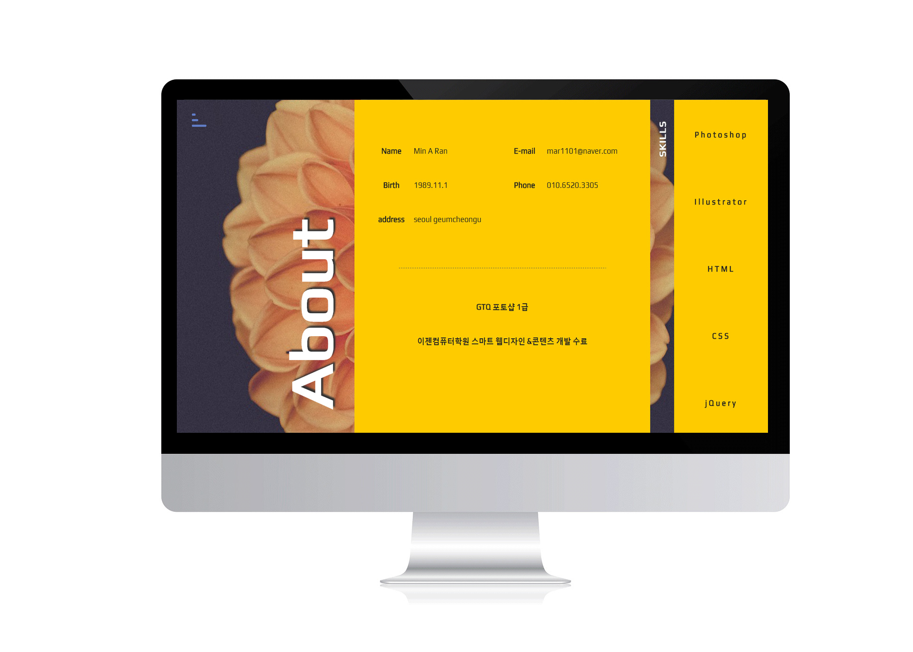

Portfolio
마우스 스크롤 이동을 통해 사용자의 불필요한 동작을 최소화 하고 빠른 화면전환을 통해 사용자의 필요한 정보의 접근성을 높인 스크롤 디자인 사이트입니다. 스크롤시 적용되는 레이아웃 이동을 통해 콘텐츠의 강조를 표현하였습니다.



마우스 스크롤 이동을 통해 사용자의 불필요한 동작을 최소화 하고 빠른 화면전환을 통해 사용자의 필요한 정보의 접근성을 높인 스크롤 디자인 사이트입니다. 스크롤시 적용되는 레이아웃 이동을 통해 콘텐츠의 강조를 표현하였습니다.
